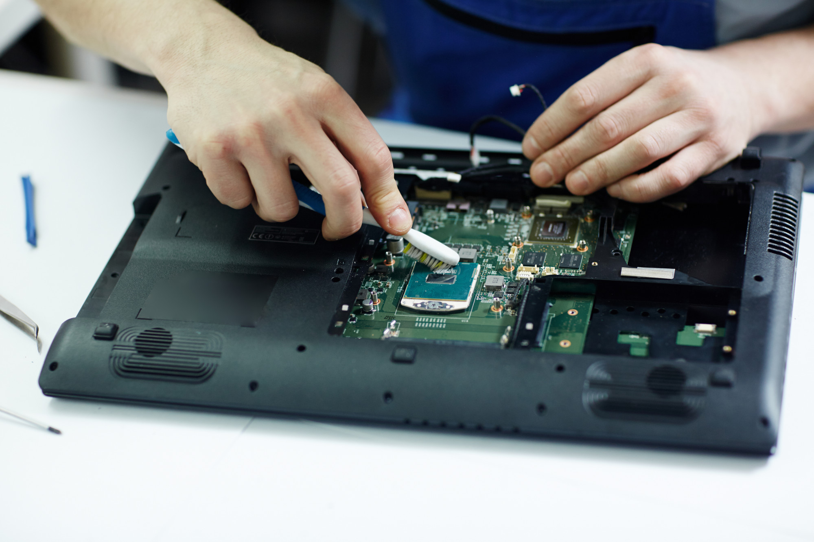

Mantencion Fisica
VivamusVivamus vulputate viverra erat, et vestibulum magna. Proin placerat condimentum dui, ac aliquam leo efficitur ut. Sed leo mauris, iaculis sed luctus non, efficitur a ante. Donec dapibus posuere consectetur. Duis dapibus, nunc vel elementum blandit, nunc nulla ultricies metus, vel auctor ante turpis id nisl. Maecenas vulputate elit eget erat laoreet
Actualizacion de componentes
r sed consequat nibh. In hendrerit nisl eu risus congue rhoncus. Nullam vestibulum nisl diam, quis porttitor nulla vestibulum facilisis. Aliquam tellus nunc, bibendum mattis magna cursus, tempor accumsan tortor. Mauris pulvinar turpis risus, id tempus odio scelerisque vitae. Vivamus pellentesque i

Instalacion de sistema operativo
to elementum diam, congue finibus enim lorem in orci. Cras condimentum rhoncus massa, et suscipit arcu ultricies vitae. Mauris efficitur quis leo ac placerat. Nulla luctus justo a tempus commodo. Sed imperdiet nulla turpis, porttitor euismod ligula porttitor a. Nunc lobortis mi vitae lacus mattis rhoncus. Maecenas